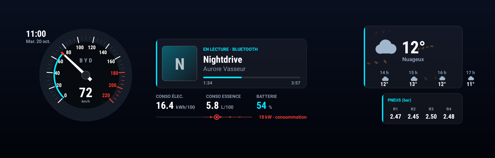
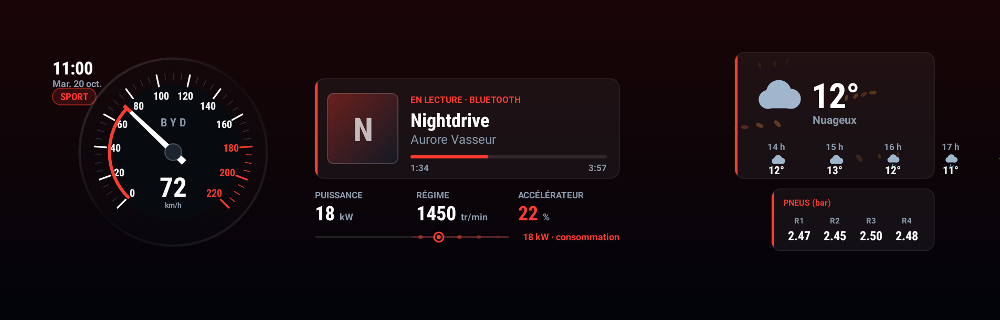
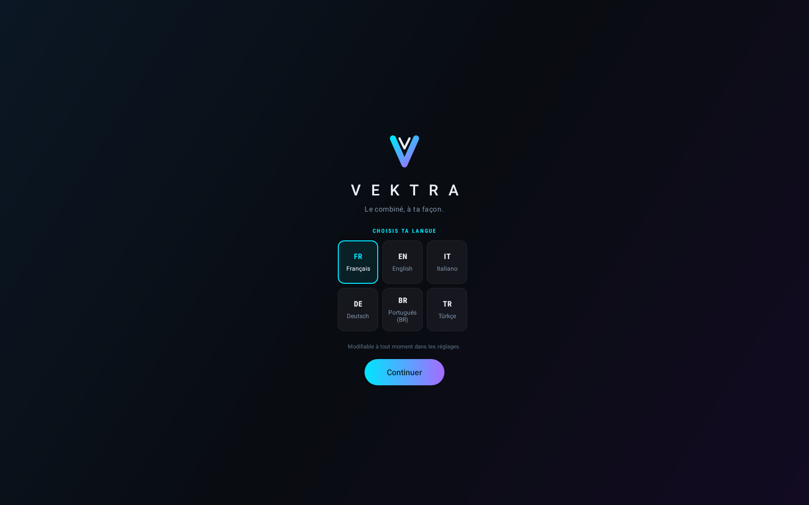
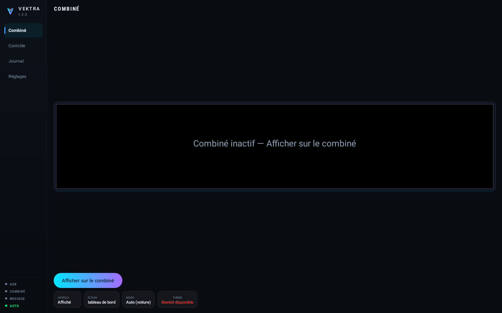
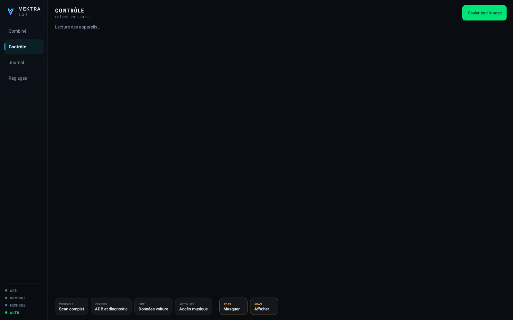
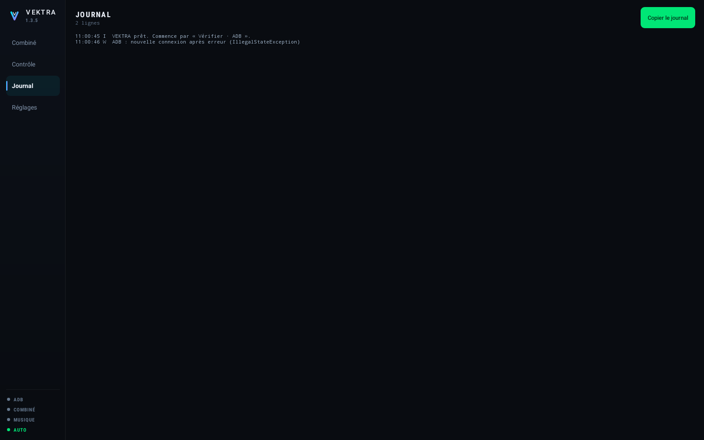
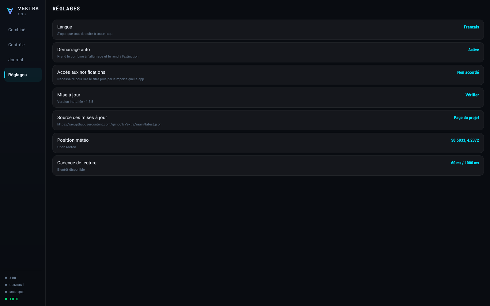

V E K T R A
Le combiné de ta BYD, à ta façon.
Aperçu
VEKTRA remplace l'affichage d'origine du combiné, derrière le volant, par un tableau de bord à soi.

De gauche à droite : l'heure et la date, le compteur à aiguille gradué jusqu'à 220 km/h, la musique en cours quelle que soit l'application qui la joue, trois chiffres choisis selon le mode, la ligne de flux d'énergie dont le point central part vers la droite en rouge quand la batterie se décharge et vers la gauche en vert quand elle se recharge, puis la météo animée et la pression des quatre pneus en bar.

En Sport, l'ambiance passe au rouge, une pastille SPORT apparaît sous
l'heure et les trois chiffres du bas changent : puissance, régime moteur et position de
l'accélérateur, à la place des consommations et de la batterie.
Les captures de cette page sont dessinées par le code de la version 1.3.5 à chaque publication, avec des valeurs de démonstration. Elles ne peuvent donc pas montrer une version plus ancienne que celle proposée ici.
Ce qu'il faut
- Un véhicule BYD équipé de DiLink 3 (Android 10). Mis au point sur une Seal U DM-i ; les autres modèles DiLink 3 n'ont pas été vérifiés.
- La tablette doit accepter l'installation d'applications extérieures (sideload).
- Le débogage ADB en réseau actif sur la tablette, sur le port 5555. VEKTRA s'y connecte en local, sur la tablette elle-même — rien ne sort du véhicule.
- Une connexion internet sur la tablette pour la météo et les mises à jour. Tout le reste fonctionne hors ligne.
Pourquoi l'ADB. Les commandes qui libèrent l'écran du combiné ne sont
autorisées qu'à l'utilisateur shell d'Android. Une application ordinaire
ne peut pas les envoyer. VEKTRA passe donc par l'ADB de la tablette, en local, pour
obtenir ce droit — c'est la seule façon connue de prendre la main sur le combiné.
Installation
- Télécharge le fichier
Vektra-1.3.5.apkdepuis cette page, sur la tablette. - Ouvre-le et accepte l'installation. Si Android refuse, autorise les « sources inconnues » pour le gestionnaire de fichiers utilisé.
- Ouvre VEKTRA. Au tout premier démarrage, l'écran d'accueil demande la langue.
- Appuie sur Continuer. L'écran principal s'ouvre.
- La première commande envoyée fera apparaître la demande « Autoriser le débogage USB ? ». Coche Toujours autoriser, puis accepte. Cette demande n'apparaît qu'une fois.

Six langues sont disponibles : français, anglais, italien, allemand, portugais du Brésil et turc.
Activer l'affichage

- Dans la section Contrôle, appuie sur Vérifier · ADB et diagnostic. C'est ce qui déclenche l'autorisation de débogage et confirme que la connexion fonctionne.
- Reviens sur Combiné et appuie sur Afficher sur le combiné.
- Le tableau de bord d'origine se met en veille, l'écran virtuel du combiné est créé, puis VEKTRA s'y affiche. L'opération prend une dizaine de secondes.
- L'aperçu au centre de la tablette montre en direct ce qui est dessiné derrière le volant. Le bouton Aperçu le replie si tu préfères un tableau d'état.
Pour revenir en arrière, appuie sur Revenir à l'origine : le tableau de bord BYD reprend la main. Si jamais il ne revient pas, coupe puis remets le contact.
Les autres touches
- Écran — choisit ce qui s'affiche sur le combiné : tableau de bord, thème énergie, données brutes, calibration ou mire de test.
- Mode — laisse la voiture décider (Sport est détecté tout seul) ou force une ambiance pour un essai à l'arrêt.
- Thème — le choix d'un thème par fichier est mis de côté pour le moment ; la touche affiche Bientôt disponible.
Les quatre sections
Le rail de gauche donne accès à quatre pages. Les quatre témoins du bas — ADB, combiné, musique, démarrage automatique — passent au vert dès que la fonction correspondante est en place.
Contrôle

Cette page relève tout : les appareils du SDK de la voiture et les valeurs qu'ils renvoient, l'état de l'ADB, l'accès à la musique, l'alimentation du véhicule, la météo, la version installée et la source des mises à jour. Le bouton Copier tout le scan, en haut à droite, met l'ensemble dans le presse-papiers — c'est ce qu'il faut envoyer en cas de problème.
Les touches du bas lancent les essais : diagnostic ADB, lecture des données de la voiture, et autorisation de l'accès à la musique.
Journal

Chaque commande envoyée et chaque réponse reçue y sont écrites, dans l'ordre. Le bouton Copier le journal fait de même pour le texte entier.
Réglages

Musique
Pour afficher le morceau en cours, VEKTRA a besoin de l'accès aux notifications : c'est la règle d'Android pour lire les sessions audio. Appuie sur la ligne Accès aux notifications et l'application se l'accorde elle-même par l'ADB, sans rien effacer de la liste existante. Une fois accordé, le titre, l'artiste, la pochette et la progression s'affichent, quelle que soit l'application qui joue — radio, Bluetooth, ou une app installée.
Démarrage et arrêt automatiques
Quand ce réglage est actif, VEKTRA prend le combiné dès que la voiture est allumée et le rend dès qu'elle est coupée. L'état du véhicule est lu directement dans la voiture, une fois par seconde : 0 éteint, 1 accessoires, 2 contact mis. Une coupure doit être confirmée deux fois d'affilée avant que l'écran soit rendu — un seul hoquet de la voiture ne doit pas faire disparaître l'affichage en pleine route.
Source des mises à jour
L'adresse de la fiche de version. Elle se change sans recompiler : n'importe quel hébergement servant un fichier texte sans mot de passe convient. Par défaut, c'est cette page.
Mise à jour
VEKTRA vérifie toute seule à chaque ouverture. Quand une version est disponible, une fenêtre affiche les nouveautés et propose Plus tard ou Télécharger et installer. Si tu acceptes, l'application se télécharge, s'installe par-dessus et se rouvre seule. Il n'y a rien à faire à la main.
Toutes les versions portent la même signature : une mise à jour remplace toujours la précédente sans qu'Android la refuse, et sans perdre les réglages.
En cas de souci
- Le combiné reste figé. Appuie sur Revenir à l'origine, puis réessaie. Si rien ne change, coupe et remets le contact.
- Aucune donnée, que des tirets. Le SDK de la voiture n'a pas répondu. La section Contrôle dit lesquels des appareils sont joignables.
- La musique ne s'affiche pas. L'accès aux notifications n'est pas accordé : voir plus haut. Vérifie aussi que quelque chose joue réellement.
- La mise à jour dit « Indisponible ». La tablette n'a pas joint la source. Vérifie sa connexion internet, puis réessaie : la raison exacte s'affiche.
- Autre chose. Ouvre Contrôle, appuie sur Copier tout le scan, puis envoie le texte. Il contient tout ce qu'il faut pour comprendre.
Nouveautés de la 1.3.5
- Captures : les deux « android-all » de Robolectric, en configurations séparées
- page et README complets, captures dessinées par le code
Télécharger
Dernière version publiée, prête à installer sur la tablette.
VEKTRA 1.3.5 — télécharger l'APK